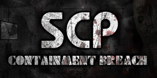
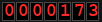
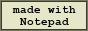
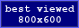

SCP: CONTAINMENT BREACH 3DS
|
You are visitor
 (just decoration) |
Welcome, Researcher!NEW! Containment Breach now runs on a Nintendo 3DS. This is a fan-made port of the classic SCP horror game: the whole facility, the monsters and the endings, on two screens. Wake up in the cell, follow the guards, and then survive. Light Containment, Heavy Containment, Entrance Zone, and the exit. What is in the port?
Dimension 1499 and the pocket dimension are in too. (hover to declassify... or not) Controls
The bottom screen shows the inventory, documents, keypads and the S-NAV (use the stylus). News[2026-10-25] Retro makeover. New options menu with tabs, light cones,
and this website. Film grain removed, as requested.
[2026-10-24] Speed. Prefetching, staged room loading and many
fewer micro-freezes. Stereoscopic 3D for the New 3DS, automatic quality scaling.
[2026-10-23] Everything else. All endings, MTF units, the Apache,
SCP-294, the radio, subtitles, the forest and dimension 1499.
[2026-10-22] The port starts. The intro, SCP-106 and the first
containment zone are playable.
DisclaimerThis is an unofficial, non-commercial fan project. It is not affiliated with the authors of SCP: Containment Breach or with Nintendo. SCP: Containment Breach and the SCP Foundation are licensed under CC BY-SA 3.0 (scp-wiki.net). The game files are not included in the download: they are converted from your own copy of the game, see the install guide. |


© 2026 serqay · fan project · this page is best viewed on a Nintendo 3DS (or anything else)